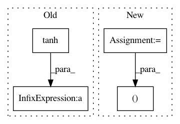

5c3f7d5f5cd23ceb70d77ccdde7ee928d59439a9,thinc/backends/jax_ops.py,,forward_lstm_gates,#,725
Before Change
hc = xp.tanh(At_hc) // 1d
Ct = (hf * Ct1) + (hi * hc) // 2a + 2b
Yt = xp.tanh(Ct) * ho // 3a, 3b
// We don"t need the gradient for this, it"s just for backprop calculation.
Gt = xp.concatenate((hf, hi, ho, hc), axis=-1)
return (Yt, Ct), Gt
After Change
Ct3 = hf * Ct2 // 2a
Ct3 += hi * hc // 2b
tanhCt3 = tanh(Ct3) // 3a
Yt3 = tanhCt3 * ho // 3b
// We don"t need the gradient for this, it"s just for backprop calculation.
Gt3 = xp.concatenate((hf, hi, ho, hc), axis=-1)
return (Yt3, Ct3), Gt3
@jax_jit()
In pattern: SUPERPATTERN
Frequency: 3
Non-data size: 4
Instances
Project Name: explosion/thinc
Commit Name: 5c3f7d5f5cd23ceb70d77ccdde7ee928d59439a9
Time: 2020-01-19
Author: honnibal+gh@gmail.com
File Name: thinc/backends/jax_ops.py
Class Name:
Method Name: forward_lstm_gates
Project Name: openai/pixel-cnn
Commit Name: a855511d35e70ac1cfe605ab6a9b0eb7c28171da
Time: 2016-11-09
Author: tim@Tims-MacBook-Pro.local
File Name: pixel_cnn_pp/nn.py
Class Name:
Method Name: gated_resnet
Project Name: openai/pixel-cnn
Commit Name: a855511d35e70ac1cfe605ab6a9b0eb7c28171da
Time: 2016-11-09
Author: tim@Tims-MacBook-Pro.local
File Name: pixel_cnn_pp/nn.py
Class Name:
Method Name: aux_gated_resnet